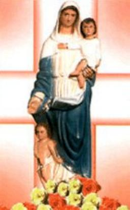
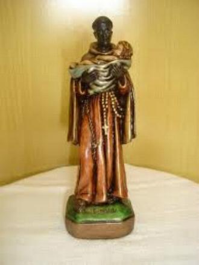
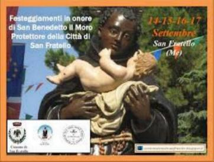

FINAL DA CAMINHADA EXISTENCIAL
O CONSOLADOR DAS M�ES
Benedito sentiu o amor e percebeu os sobressaltos do cora��o de sua querida m�e.
Conheceu de perto a sua dor, os seus cansa�os e todos os 
Joana de Giovanni era uma dessas m�es, moradora na cidade de Palermo. Seu filho ausentou-se de casa e n�o dava not�cias h� v�rios meses. Desesperada, foi ao Convento a procura de Frei Benedito. Este, logo que a viu, falou:
- �Quer not�cias do filho, n�o � mesmo Dona Joana? Pois logo as ter�.
E assim aconteceu. Dias depois o rapaz voltou para a casa paterna, s�o e salvo.
Frei Benedito cuidava atenciosamente de visitar as m�es quando estavam em v�speras de parto, animava-as e enchia os seus cora��es de esperan�a, e em muitos casos, profetizava o futuro grandioso dos seus filhos.
Certa vez, quatro senhoras de Palermo: Eul�lia, Lucrecia, Francesca e Eleonora, esta com uma criancinha de cinco meses nos bra�os, foram ao Convento visitar Frei Benedito. Na volta, ainda perto do Convento, a carro�a tombou e matou a criancinha da senhora Eleonora. Foi uma gritaria muito grande e os Frades veio prestar socorro, inclusive Frei Benedito. O quadro era triste e desolador. Frei Benedito vagarosamente e muito s�rio se aproximou de Eleonora que chorava muito, inconsol�vel, com o filhinho ao colo. Ele disse a ela: �Pode parar de chorar. A crian�a n�o est� morta. Pode lhe dar de mama�. De repente um sil�ncio envolveu a todos, os presentes ficaram olhando e chegaram a imaginar que Frei Benedito estivesse fora de si! Mas n�o estava! Ele sabia o que dizia. Mal a m�e levou a m�o ao seio, naquele gesto materno de amamentar, olhando para o rostinho da crian�a, viu que nele se abriu um belo sorriso. Tudo terminou em grande alegria e num comovente ato de f� a DEUS, que � PAI e CRIADOR, ali presente, naquele sinal Divino, milagrosamente devolvendo a vida a crian�a.
SEUS �LTIMOS DIAS

Em Fevereiro de 1589 ele ficou enfermo, teve que permanecer na cama. E assim doente ficou com seus sofrimentos durante dois meses, dando por assim dizer, os �ltimos retoques a sua santidade, sendo provado na sua paci�ncia e na humildade.O m�dico do Convento, Dr. Gian Domenico Rubiano, homem piedoso e competente, depois de examinar Frei Benedito disse a Comunidade: "O caso dele � grave e n�o h� recursos na medicina. � triste para todos n�s, mas vamos perd�-lo em breve"!
- "N�o doutor. Desta vez ainda n�o morrerei. NOSSO SENHOR quer que eu cure desta enfermidade, mas de outra que terei em breve, n�o vou escapar"!
Esta profecia tamb�m se cumpriu integralmente, porque ele morreu sessenta dias depois.
Nesse per�odo, a grandeza de seu amor se manifestou firme e construtiva at� o �ltimo instante. Sabendo que os conselhos e orienta��es de um pai bem experimentado na vida, com a passagem de ida para a eternidade j� comprada, suas palavras e ensinamentos se tornaram inesquec�veis e foram guardados diligentemente no local mais herm�tico do cora��o de todos que o amavam. Como a Imita��o de CRISTO, os ensinamentos sobre o arrependimento e a convers�o do cora��o eram quentes e cheios de vida:
- �Miser�vel ser�... Se n�o te converterdes a DEUS. Por que queres deixar para depois teus bons prop�sitos? Levanta-te e come�a neste instante. Agora � tempo de convers�o�.
- �O que nos adianta viver muito, quando t�o pouco nos emendamos?�
- �Fa�amos penit�ncia, porque na hora da morte haveremos de nos arrepender muito pelo tempo desperdi�ado no pecado ou n�o aproveitado para a salva��o�.
DEUS proporcionou ao seu amigo Benedito muitas consola��es espirituais, nos dias que antecederam a sua morte. Certo dia, o enfermeiro vigilante percebeu que o rosto do doente se iluminou, a boca se abriu e os olhos ficaram fixos e ext�ticos. Ele pensou: �� o fim, Frei Benedito est� cruzando o limiar da eternidade�. E correu para avisar a Comunidade. Mas n�o havia chegado a hora. A Comunidade ficou sabendo depois que Frei Benedito teve uma visita do C�u. Mais tarde ele contou ao enfermeiro: �Pode ficar tranquilo, eu vou falecer no dia 4 de Abril�. Respondeu o enfermeiro: �Imagine, Frei Benedito, esta casa vai ficar cheia de gente�. Isso ele disse prevendo o transtorno que haveria no Convento com a chegada de muita gente para o vel�rio. Frei Benedito lhe respondeu: �Pode ficar sossegado enfermeiro, porque n�o vir� ningu�m�.
As duas profecias se cumpriram, Frei Benedito faleceu no dia 4 de Abril de 1589 e pouca gente compareceu ao vel�rio. Como foi poss�vel essa aus�ncia de pessoas considerando a not�vel fama dele? A explica��o dada pelos historiadores abrange diversos aspectos, mas que aparentemente, nenhum deles satisfaz � l�gica e o merecimento. Disseram que nas proximidades de Palermo estava acontecendo uma grande Festa do ESP�RITO SANTO e para que o povo n�o esvaziasse a festa, os Padres nada disseram. Comentaram tamb�m que os Franciscanos do Convento n�o deram publicidade do acontecimento, para evitar a invas�o popular que sem d�vida, ia interferir na ordem religiosa, e por �ltimo, somente tr�s dias de vel�rio n�o iam satisfazer o povo que tamb�m estava pedindo rel�quias do Santo. Por tudo isto os Frades guardaram sil�ncio e fizeram prevalecer � �ltima vontade de Frei Benedito: �Depois de morto, eu quero ser sepultado de uma vez�. Seja qual for � explica��o, na verdade o que ressalta de maneira not�vel foi � profecia do Santo, que se cumpriu integralmente: �Morreu no dia 4 de Abril de 1589 e n�o teve quase ningu�m no vel�rio�.
N�o sabemos quantas horas o corpo de Frei Benedito foi velado. Mas n�o deve ter sido um longo vel�rio. A seguir o corpo foi levado para a Igreja do Convento, onde a Comunidade rezou e cantou o of�cio dos Mortos e logo depois, ele foi sepultado no Cemit�rio da Comunidade Religiosa.
Quando o povo ficou sabendo da morte dele, com grande tristeza e saudade, todos acorreram ao Convento, pois queriam rezar no t�mulo dele. E depois imploraram por uma lembran�a ou rel�quia, pois Frei Benedito era muito amado por todos e sua bondade ficou derramada no cora��o do povo. Suas roupas, as roupas de cama onde ele faleceu, tudo o que lhe pertenceu, foram reduzidas a pequenas tiras, que cada um levou carinhosamente como precioso trof�u.
Quanto ao Cemit�rio da Comunidade onde Frei Benedito foi sepultado, era um local com acesso dif�cil que come�ou a tumultuar o servi�o do Convento, porque a quantidade de visitantes era muito grande e n�o cessava nunca, incomodando o sil�ncio da Comunidade. Resolveram ent�o colocar os seus restos mortais num local mais acess�vel ao povo. Em 1591, dois anos depois da morte dele, Padre Louren�o Galatino, Visitador da Prov�ncia Franciscana da Sic�lia, conseguiu do Cardeal Mathei autoriza��o para colocar os despojos na Sacristia da Igreja de Santa Maria de JESUS, e o translado ocorreu no dia 7 de Maio de 1592. Foi lavrada uma ata sobre aquela translada��o e foi assinada por todas as autoridades presentes. Dizem que o corpo de S�o Benedito estava intacto e exalando um perfume celeste. Para o novo sepulcro, fizeram um amplo buraco na parede grossa da Sacristia e ali ent�o, numa nova urna, colocaram o corpo do Santo.
Entretanto, com o passar dos dias, a Sacristia virou uma Capela, com o povo ali rezando e cantando, e assim ficou durante dezenove anos, tirando o sossego e a tranquilidade da Comunidade Religiosa. Os Frades de Santa Maria ent�o pediram a Santa S� uma nova translada��o, levando os despojos de S�o Benedito para dentro da Igreja mesmo. O Cardeal Pinello, Prefeito da Sagrada Congrega��o dos Ritos, em carta de 11 de Mar�o de 1611, autorizou a nova translada��o que foi efetivada no dia 3 de Outubro de 1611, com a presen�a do Cardeal D�ria. A festa foi muito bonita com uma imponente prociss�o, onde o povo carregou os restos mortais do Santo numa urna de cristal.
Hoje o corpo de Frei Benedito est� colocado numa Capela lateral dentro da mesma Igreja de Santa Maria de JESUS, o velho Convento Franciscano que est� situado a tr�s quil�metros de Palermo.
BEATIFICA��O E CANONIZA��O
Em
1592, ou seja, tr�s anos ap�s a morte de Frei Benedito foi iniciado o Processo 
Em 1743, o Papa Bento XIV permitiu a Ordem Franciscana preparar o texto religioso e celebrar a Santa Missa e Of�cio Divino pr�prios em honra de Frei Benedito. Ensejou aos Franciscanos, presentes no mundo inteiro, propagar mais fortemente a devo��o ao Santo, at� que em 1763, o Papa Clemente XIII o Beatificou.
Em 1776, o Cardeal Visconti iniciou o Processo final para a Canoniza��o. Depois de muitas reuni�es e estudos sobre os milagres de DEUS acontecidos pela intercess�o do Santo, finalmente Frei Benedito foi Canonizado no dia 25 de Maio de 1807, num Domingo da SANT�SSIMA TRINDADE, pelo Papa Pio VII.
IMAGENS DE S�O BENEDITO
Os Santos s�o representados em suas imagens de diversos modos, geralmente retratando algum acontecimento de sua exist�ncia, ou expressando a sua grande devo��o, ou de algo que faz lembrar uma passagem importante da sua vida. As imagens de S�o Benedito desde longa data mostram o MENINO JESUS nos seus bra�os. Os artistas foram buscar inspira��o em tr�s fatos sugestivos ocorridos na vida do Santo, que traduz a tend�ncia da interpreta��o.
O primeiro fato ocorreu na Ceia de Natal, no ano 1576, quando ele estava com cinquenta anos de idade. Deixou a cozinha e foi para a Igreja, e o almo�o ficou aos cuidados de dois Anjos de DEUS que prepararam a Ceia para o senhor Arcebispo de Palermo e a Comunidade Franciscana, enquanto ele rezava e venerava o MENINO JESUS e a M�E DE DEUS, numa linda pintura do Natal de JESUS, num quadro colocado ao lado do Altar-mor.
O segundo acontecimento ocorreu em 1582. Ele atendia o povo na Portaria do Convento de Santa Maria de JESUS, quando chegaram os pais e familiares transportando uma pequena crian�a morta. Ele tomou-a nos bra�os, fez o Sinal da Cruz na cabecinha da crian�a, e suplicando a miseric�rdia Divina, elevou a mente a DEUS CRIADOR e nosso PAI e, pediu tamb�m, que todos rezassem. DEUS ressuscitou a crian�a, que acordando cheia de alegria e amor, se movimentava feliz nos bra�os de Benedito.
O terceiro fato se refere � realidade de que os dias de Benedito sempre eram cheios de muito trabalho, e eram tantos que a noite ele estava simplesmente exausto. Ent�o, ele que vivia durante o dia trabalhando s�rio e pesado para a gl�ria de DEUS e da VIRGEM MARIA, � noite, era consolado com vis�es celestes e doces sonhos espirituais, quase sempre acompanhados da querida presen�a do MENINO JESUS.
Por esses motivos, os artistas concordaram em construir a imagem de S�o Benedito, com o MENINO JESUS ao colo.